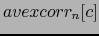
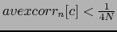
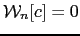

Next: Channels Sum and Output Up: Output Signal Generation Previous: Automatic Channel Weight Adaptation Contents
Although efforts are made to ensure that the TDOA values assigned to each of the channels are correct, in some cases the signal of one of the channels at a particular segment is itself of such low quality that its use in the sum would only degrade the overall quality. This usually happens when the quality of one or more microphones is very different from the others (for example the PDA microphones in the ICSI meeting room recordings as explained in Janin et al. (2004)).
In the filter&sum processing all available microphones in the room are used and a dynamic selection and elimination of the microphones that could harm the overall signal quality at every particular segment is performed. The previously defined  is used to determine the channel quality. If  then . After checking all the channels for any elimination the weights are readapted to sum up to 1.